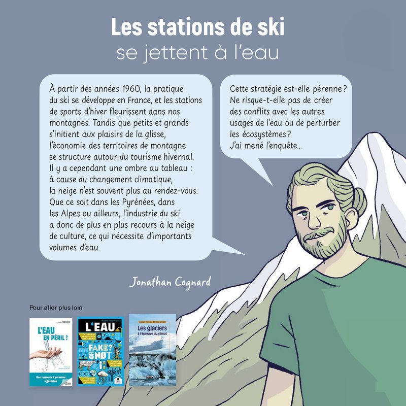
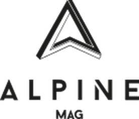
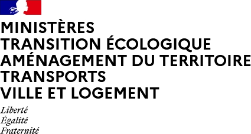

Jonathan Cognard
Ecological economist · PhD in economics
Science outreach
Sciences en bulles

2024 laureate: “Les stations de ski se jettent à l'eau” (Ski resorts take the plunge), my research as a comic. Drawing © Héloïse Chochois
Popular science article with Lucas Berard-Chenu: should ski resorts still invest in snowmaking? January 2026
La Montagne & Alpinisme
Interview in the article “L'eau, le grand bouleversement” (Water, the great upheaval), FFCAM magazine, no. 2-2026.
Interview: snowmaking and ski resort profitability.

Article on my PhD: “Impact écologique et économique des retenues d'altitude : promesses non tenues ?” (Ecological and economic impact of mountain reservoirs: broken promises?)

My article from The Conversation republished by the French resource centre for climate change adaptation.
Public talks and events
- 2024Skiing, tourism, water and climate change
Talk for high school students, Fête de la science, October 2024 - 2024Skiing, tourism, water and climate change
Talk for high school students, Gallo-Roman museum of Saint-Romain-en-Gal (Vienne), Fête de la science, October 2024 - 2024Skiing, tourism, water and climate change
Talk for high school students, Mining museum (Puits Couriot), Saint-Étienne, Fête de la science, October 2024 - 2024Snowmaking in ski resorts: towards water use conflicts?
Maison de la Montagne, Grenoble, October 2024 - 2024Water management in mountain areas
Bien l'bourgeon festival, May 2024